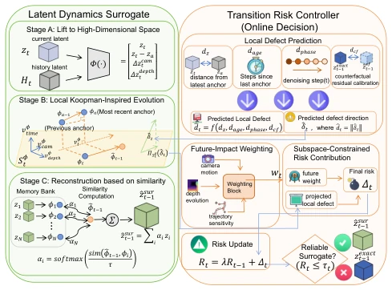
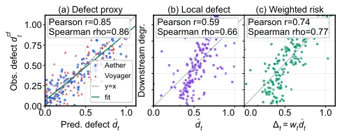
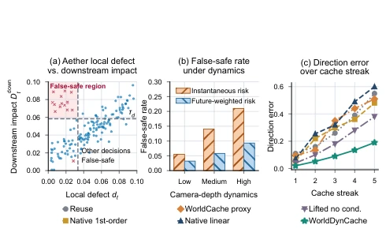
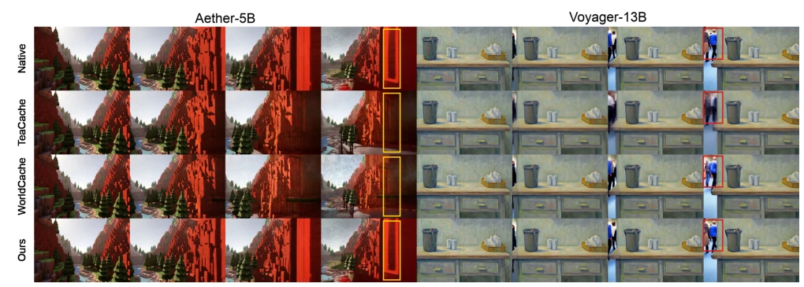
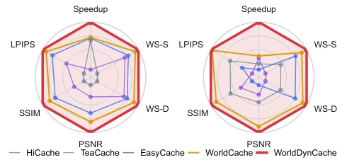

This paper conducts a 'risk management' checkup for diffusion world models. Although acceleration reached nearly 5x, the core still relies on the caching logic of 'calculating less is better than calculating accurately'. The authors cleverly pointed out the blind spot of existing caching that only looks at local errors, like driving while only looking at the dashboard and not the road conditions, prone to crashing in long sequences. However, introducing lifted representation and risk controller indeed increases engineering complexity; although claimed to be training-free, who has calculated the maintenance cost of that memory bank? WorldScore improvement is limited, indicating that in terms of generation quality it is still 'good enough', still far from true physical simulation. Overall, it is an exquisite engineering patch, not a theoretical disruption, suitable for scenarios sensitive to latency but with acceptable fault tolerance, after all, no one wants to save a few milliseconds and have faces in the video suddenly turn into mosaics.
研究动机Motivation
扩散世界模型（Diffusion World Models）虽然能生成高质量视频，但推理慢得让人想砸键盘（Akbari et al. 2026）。现有的缓存方法（如 WorldCache）主要依赖局部特征或 token 漂移来判断是否跳过计算（Feng et al. 2026b）。问题在于，它们假设当前步骤的微小误差不会影响未来，这就像以为少跑一步不会累死。论文指出两个关键缺陷：一是瞬时缺陷无法反映下游累积影响（Observation 1）；二是短期历史无法在条件变化时保持方向准确性（Observation 2）。这导致现有方法在相机运动或几何变化剧烈时容易“翻车”，产生虚假的安全感，无法应对复杂的动态场景，限制了其在实时交互或长序列生成中的应用潜力。
Diffusion World Models, although capable of generating high-quality video, have inference speeds so slow they make one want to smash the keyboard (Akbari et al. 2026). Existing caching methods (such as WorldCache) mainly rely on local features or token drift to determine whether to skip calculations (Feng et al. 2026b). The problem lies in their assumption that small errors in the current step will not affect the future, which is like thinking skipping one step won't tire you to death. The paper points out two key defects: first, instantaneous defects cannot reflect downstream cumulative impact (Observation 1); second, short-term history cannot maintain directional accuracy when conditions change (Observation 2). This causes existing methods to easily 'crash' when camera motion or geometric changes are severe, producing a false sense of security, unable to cope with complex dynamic scenarios, limiting their application potential in real-time interaction or long-sequence generation.

Figure 3: Overview of WorldDynCache. The latent dynamics surrogate (green) lifts the current state, applies trajectory- local Koopman-inspired evolution, and reconstructs a can- didate next latent from exact-anchor memory. The risk con- troller (orange) predicts and accumulates its future-weighted transition risk. A low-risk candidate is committed; other- wise, WorldDynCache executes an exact transition, which refreshes memory and calibrates subsequent risk estimates.
WorldDynCache is divided into two parts: Latent Dynamics Surrogate and Transition Risk Controller. The Surrogate does not directly predict the denoising output, but approximates the complete latent state transition. It first lifts the current state to a high-dimensional space (Condition-Aware Lifted State), containing information such as camera, depth, scheduling phase, etc., then retrieves compatible historical transition increments (Local Lifted Evolution) from the memory bank, finally reconstructs candidate latent states via Kernelized Nonlinear Observation. The Controller is responsible for 'braking'; it predicts candidate local defects and weights them according to future sensitivity (such as camera motion, phase), accumulating risk values. If the risk exceeds the threshold, it reverts to exact Transformer calculation. The entire process requires no extra training, using counterfactual residuals to online calibrate the risk proxy, ensuring consistency of key dynamics without sacrificing acceleration. Specifically, the memory bank only stores input-output pairs of exact steps, matching historical trajectories through similarity, avoiding the learning burden of global Koopman operators, this local linearization approximation remains effective even when dynamic changes are severe, and has extremely low computational overhead, allowing the model to significantly reduce computational pressure while maintaining geometric consistency.

Figure 4: Latent-transition risk diagnostics. Panel (a) com- pares ˆdt with dcf t , with Pearson/Spearman correlations of 0.85/0.86. Panels (b,c) compare downstream degradation with the local defect ˆdt and future-weighted risk ∆t.
Tested on HunyuanVoyager-13B and Aether-5B for world generation and 3D reconstruction. Compared to WorldCache, Voyager accelerated 4.92x, Aether accelerated 2.15x, and metrics such as WorldScore and LPIPS were superior to other caching baselines (such as TeaCache, EasyCache). In 3D reconstruction tasks, depth and pose metrics (AbsRel, RPE-r) also showed significant improvement, indicating better geometric consistency maintenance. Ablation experiments prove that Risk Controller and Surrogate are complementary; removing condition awareness or future risk weighting leads to performance degradation. Memory usage is close to native inference, with no extra bloat, proving the feasibility of this framework in actual deployment, especially in simulation environments requiring fast iteration, providing new ideas for the practicality of diffusion models.
其他图片Other Figures

Figure 2: Latent-transition safety diagnostics for World- DynCache. (a) Local transition defect dt versus down- stream impact Ddown t , using thresholds τD/τd = 0.060/0.025 for Aether and 0.080/0.030 for Voy- ager. (b) Instantaneous/future-weighted false-safe rates of 5.2%/3.8%, 14.6%/5.4%, and 20.9%/9.5% in the Low/Medium/High camera–depth dynamics bins. (c) Direc- tion errors of different approximation methods over increas- ing cache-streak lengths. Full experimental details are pro- vided in the supplementary material.

Figure 5: Qualitative world-generation comparisons. Left: Aether-5B verdant-landscape sample 091. Right: Voyager-13B stylized indoor-workspace sample. Rows show Native, TeaCache, WorldCache, and WorldDynCache; each row contains four frames from the same input scene. The boxes highlight representative regions where WorldDynCache better preserves the native output.

Figure 6: Speed–quality tradeoffs for HunyuanVoyager-13B (left) and Aether-5B (right). Each axis is normalized within the corresponding model block among the five plotted meth- ods; larger values are better, with LPIPS inverted.